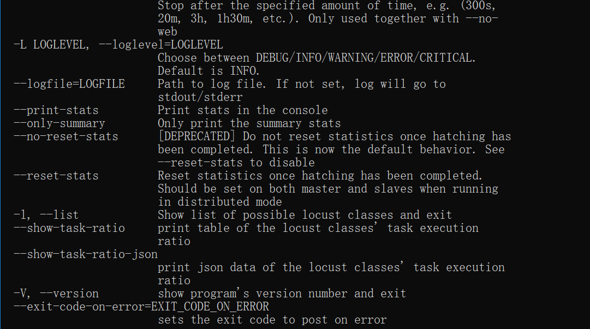
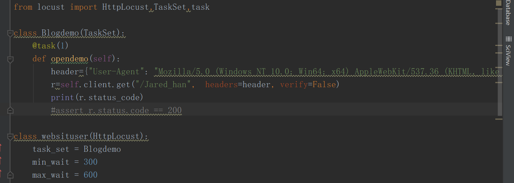
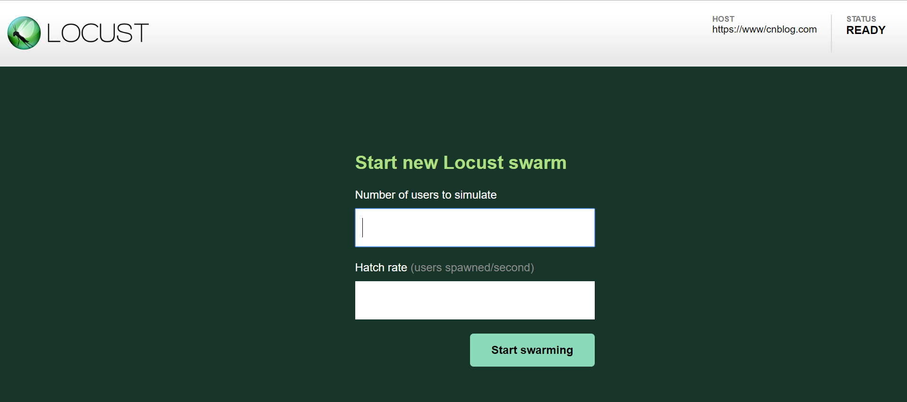
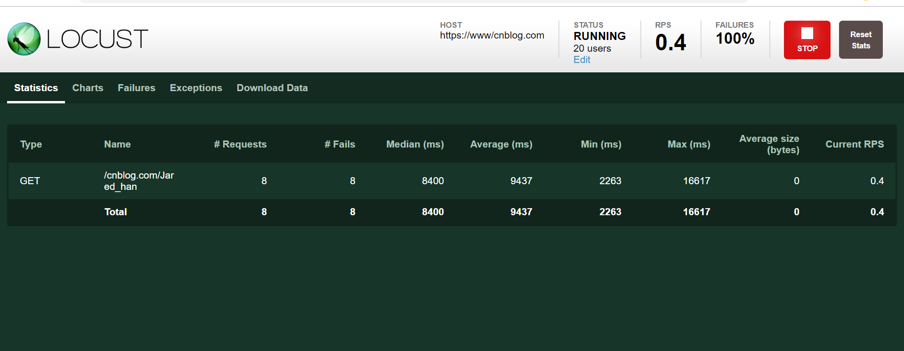

原文连接:https://www.cnblogs.com/Jaredhan/p/11715369.html
今天接触到Locust性能模块，下面介绍一下安装与简单的应用
1、安装方式:pip install Locust
Locust支持Python 2.7, 3.4, 3.5, and 3.6的版本，小编的环境是python3.6直接用pip安装就行
2、安装后输入：locust --help,可以校验安装是否正确

3、快速开始使用locust模块
上代码：


4、新建一个类BlogDemo(TaskSet)，继承TaskSet，该类下面写一些准备请求的行为（访问的接口）
里面的self.client调用get和post方法，跟requests是一样的
@task装饰该方法表示为用户行为。括号里面参数表示该行为挑选执行的权重，数值越大，执行频率越高，不设置默认是1
5、WebsiteUser()类用于设置性能测试。
task_set ：指向一个定义了的用户行为类。
min_wait ：用户执行任务之间等待时间的最小值，单位：毫秒级。
max_wait ：用户执行任务之间等待时间的最大值，单位：毫秒级。
6、启动locust脚本
可在pycharm中直接启动脚本
[2019-10-21 18:56:23,879] DESKTOP-5GCGBAB/INFO/locust.main: Starting web monitor at *:8089
[2019-10-21 18:56:23,879] DESKTOP-5GCGBAB/INFO/locust.main: Starting Locust 0.12.1
在pycharm控制台中显示此代表脚本已经运行成功！
7、查看设置并发页面
打开浏览器输入，因为是本机启动127.0.0.1 浏览器输入 localhost:8089（在上面已经显示出locust的端口为8089）

打开后页面显示
8、设置并发
Number of users to simulate 设置虚拟用户总数
Hatch rate (users spawned/second) 每秒启动虚拟用户数
点击Start swarming 开始运行性能测试

Type：请求类型；
Name：请求路径；
requests：当前请求的数量；
fails：当前请求失败的数量；
Median：中间值，单位毫秒，一般服务器响应时间低于该值，而另一半高于该值；
Average：所有请求的平均响应时间，毫秒；
Min：请求的最小的服务器响应时间，毫秒；
Max：请求的最大服务器响应时间，毫秒；
Content Size：单个请求的大小，单位字节；
reqs/sec：每秒钟请求的个数
点击STOP则停止运行
点击Edit,则会弹出设置窗口，重新设置并发数量与用户总数